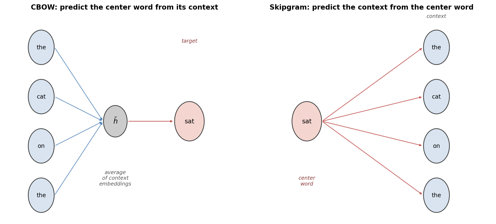
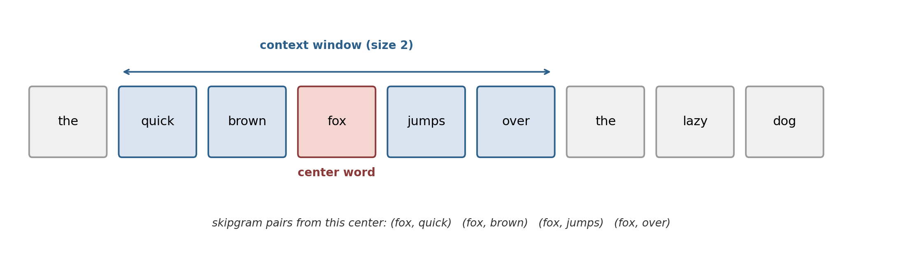
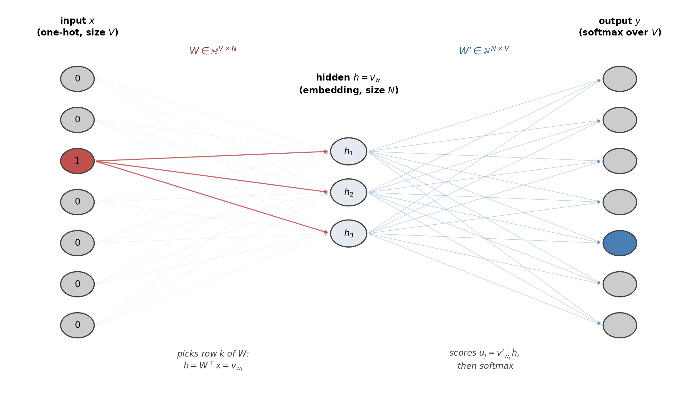
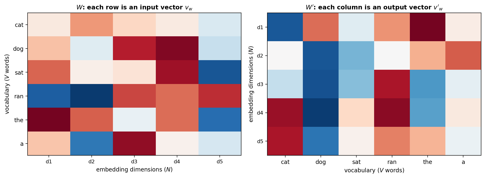
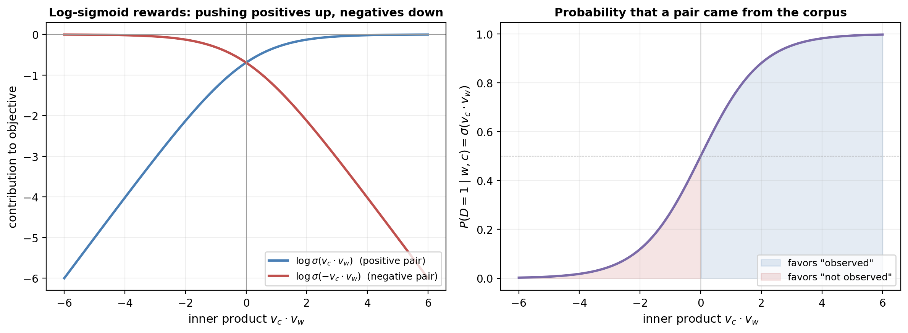
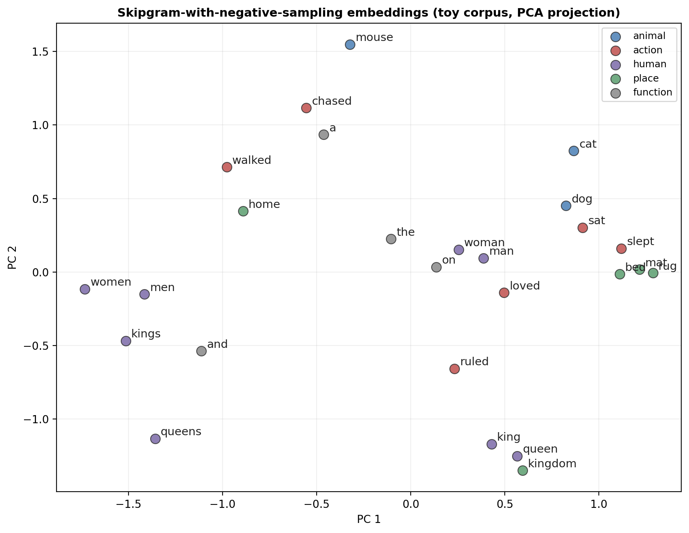
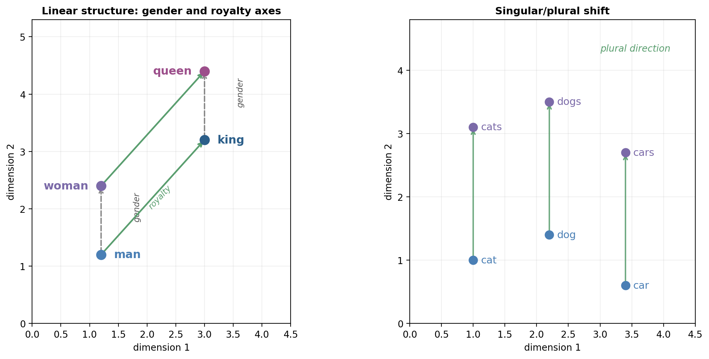

The preceding articles developed two very different ways of representing words. The n-gram language model treated words as atomic symbols and estimated their joint distribution by counting co-occurrences. The spectral embedding article then replaced those symbols with dense real vectors: it built a similarity graph from distributional context and extracted word vectors as eigenvectors of the graph Laplacian. The spectral approach was count-based and purely linear-algebraic — we diagonalized a matrix and read off coordinates.
This article develops Word2Vec, introduced by Tomas Mikolov and collaborators at Google in 2013. Word2Vec sits in exactly the same niche — it maps each word $w$ in a vocabulary $V$ to a dense vector $v_w \in \R^N$ using nothing but the distributional information in a corpus — but it arrives there by an entirely different route. Instead of factorizing a matrix, Word2Vec trains a shallow neural network to predict words from their contexts (or vice versa), and then throws the network away. The embeddings are the trained weights.
The result is one of the most influential ideas in modern NLP. Word2Vec embeddings exhibited a remarkable, unexpected property: linear arithmetic in the embedding space tracks semantic relationships. The famous example is $v_{\text{king}} - v_{\text{man}} + v_{\text{woman}} \approx v_{\text{queen}}$. That regularities of meaning would align with vector addition was not designed in — it emerged from the training objective. This observation shaped the entire decade of representation learning that followed, from GloVe to contextual embeddings (ELMo, BERT) to the internal representations of large language models.
This article focuses exclusively on Word2Vec — its two architectures (CBOW and skipgram), its objective function, the derivation of its gradient, the negative sampling trick that makes training tractable, and why the resulting embeddings have the structure they do. Almost everything here reuses machinery from earlier articles: one-hot vectors from the tokenization article, softmax and cross-entropy from sigmoid neurons, forward/backward propagation from the neural networks article, and the sigmoid itself from logistic regression.
Before diving into the algorithm, it is worth pausing on a conceptual question. The spectral embedding article already produced dense word vectors from count statistics. Why introduce an alternative that works by prediction?
The answer is partly empirical — Word2Vec embeddings turned out to capture linguistic regularities with surprising precision and trained efficiently on corpora of billions of tokens — and partly conceptual. Count-based methods compress a static object (the co-occurrence matrix) into a lower-dimensional space. Predictive methods define a task (predict a word from its context) and learn representations as a side effect of doing that task well. The two framings are deeply connected — Levy and Goldberg showed in 2014 that skipgram with negative sampling implicitly factorizes a shifted pointwise-mutual-information matrix — but the predictive framing generalized much more readily. Once you phrase representation learning as "train a model to solve a self-supervised task," you can keep scaling the model, the task, and the corpus. Every modern large language model is a descendant of this idea.
Word2Vec's motto, borrowed from the distributional hypothesis of J.R. Firth (1957), is: "you shall know a word by the company it keeps." The company of a word is its context — the words that appear around it. If two words consistently occupy similar contexts, they are probably similar in meaning. Word2Vec's only job is to turn that intuition into a differentiable loss function and optimize it by gradient descent.
Recall the setup from the spectral embedding and tokenization articles. We have a fixed vocabulary $V$ of size $|V|$, and each word $w$ has an integer index. The most naive way to turn a word into a vector is one-hot encoding:
$$ x_w = e_k \in \R^{|V|}, \qquad (e_k)_i = \begin{cases} 1 & i = k \\ 0 & \text{otherwise} \end{cases} $$
where $k$ is the index of $w$. One-hot vectors are orthogonal across words: $e_k^\top e_{k'} = 0$ for any $k \neq k'$. This is a disaster for any model that hopes to generalize across words. The inner product between "cat" and "dog" is identical to the inner product between "cat" and "staircase" — zero. There is no geometry in the space, no similarity, no structure.
What we want is a map $w \mapsto v_w \in \R^N$ with $N \ll |V|$, where semantic similarity between words is reflected as geometric proximity between vectors. A vector of dimension $N \approx 300$ can encode far more than which of $|V| \approx 10^5$ buckets a word lives in: it can encode how it resembles every other word, in multiple directions simultaneously. This is the distributed representation idea: meaning is not a single atomic label but a pattern of activity over many dimensions.
Word2Vec's architecture will take one-hot vectors as its nominal input, but the first thing it does is immediately look up an $N$-dimensional vector for each word — so we never actually compute with the $|V|$-sized representation. The one-hot framing is only useful as a bookkeeping device that turns the whole model into a plain neural network that we already know how to train.
Word2Vec is really an umbrella term for two closely related models. Both start from the same premise — a sliding window over the corpus defines (center-word, context-word) pairs — but they predict in opposite directions.

Continuous Bag of Words (CBOW) takes a window of context words around a target position and tries to predict the word at that position. The context is treated as a bag — we average the context-word vectors and throw away their order. If the sentence is "the cat sat on the mat" and the target is "sat", CBOW sees {the, cat, on, the} as input and tries to output "sat".
Skipgram does the opposite. Given the center word, it tries to predict each word in the surrounding window independently. With the same sentence and center "sat", skipgram produces four training examples — (sat, the), (sat, cat), (sat, on), (sat, the) — each asking "given 'sat', what are the context words?"

The two architectures have complementary strengths. CBOW is faster to train because each window produces a single prediction, and it averages noise across the context, so it learns slightly better representations for frequent words. Skipgram produces one training example for each context word and therefore reuses each occurrence of a rare word many times. This makes skipgram slower but gives it much better representations for rare words and for small corpora. In practice, skipgram (with the negative sampling trick we develop later) is the more commonly used variant.
We will derive both, starting with the simplest possible setup: a CBOW model with a single context word.
The cleanest way to see what is happening inside Word2Vec is to strip CBOW down to its bare minimum: one context word predicting one center word. This is a standard feedforward neural network, of the kind developed in the neural networks article, with one quirk — its input is a one-hot vector.

The model has two weight matrices:
Each word thus has two distinct vector representations: one as an "input / center" word and one as an "output / context" word. This is a subtle but important feature of Word2Vec. After training, one usually keeps only the input embeddings $v_w$ as "the" word vectors and discards $W'$, but the two play asymmetric roles inside the model.
Let the input word be $w_I$ with index $k$, so $x = e_k$. The hidden activation is
$$ h = W^\top x = W^\top e_k = v_{w_I}. $$
Multiplying $W^\top$ by a one-hot vector simply selects the $k$-th row of $W$. The hidden layer has no nonlinearity — the whole point is to let $h$ act as a linear lookup into an embedding table.
From the hidden layer we compute a score for each candidate output word $w_j$:
$$ u_j = v'^{\top}_{w_j} \, h = v'^{\top}_{w_j} \, v_{w_I}. $$
The score is an inner product between the input embedding of the center word and the output embedding of the candidate. Finally, we normalize with a softmax to get a proper probability distribution over $V$ words:
$$ y_j \;=\; P(w_j \mid w_I) \;=\; \softmax(u)_j \;=\; \frac{\exp(u_j)}{\sum_{j'=1}^{V} \exp(u_{j'})}. $$
Putting it all together:
$$ \boxed{\;P(w_j \mid w_I) = \frac{\exp\!\left(v'^{\top}_{w_j} v_{w_I}\right)}{\sum_{j'=1}^{V} \exp\!\left(v'^{\top}_{w_{j'}} v_{w_I}\right)}.\;} $$
This is the softmax over inner products — the same construction we met in multinomial logistic regression, only here the logits are dot products between embedding vectors rather than between weights and features.
Given a training pair $(w_I, w_O)$ with target index $j^\ast$, the target distribution is one-hot: $t = e_{j^\ast}$. We minimize the cross-entropy between the predicted distribution $y$ and the one-hot target $t$, which reduces to the negative log-likelihood of the true class:
$$ E \;=\; -\log P(w_O \mid w_I) \;=\; -\log y_{j^\ast} \;=\; -u_{j^\ast} + \log \sum_{j'=1}^{V} \exp(u_{j'}). $$
Minimizing $E$ means simultaneously increasing the logit $u_{j^\ast}$ of the correct target and decreasing the log-sum-exp of all logits. In embedding terms: pull $v'_{w_O}$ and $v_{w_I}$ closer (their inner product goes up), and push every other $v'_{w_j}$ away from $v_{w_I}$.
Deriving the gradients is instructive. It shows precisely how each training pair nudges the geometry of the embedding space.
Differentiating $E$ with respect to the score $u_j$:
$$ \frac{\partial E}{\partial u_j} \;=\; y_j - t_j \;=:\; e_j. $$
The error signal $e_j$ is the familiar prediction minus target we have seen in every softmax-and-cross-entropy derivation. It is positive when the model assigns too much probability to word $j$ and negative (only for $j = j^\ast$) when it assigns too little.
Since $u_j = v'^{\top}_{w_j} h$, we have
$$ \frac{\partial E}{\partial v'_{w_j}} \;=\; e_j \cdot h, $$
yielding the output-side update
$$ v'_{w_j} \;\longleftarrow\; v'_{w_j} - \eta \cdot e_j \cdot h \qquad \text{for every } j = 1, \ldots, V, $$
where $\eta$ is the learning rate. With $h = v_{w_I}$, this update has a clean geometric reading:
Every training pair produces a force on $v'_{w_{j^\ast}}$ pulling it toward $v_{w_I}$, and a counter-force on every other $v'_{w_j}$ pushing it away. The correct word attracts; all other words repel — in proportion to how confidently the model currently claims they are the right answer.
To update the input embedding $v_{w_I}$ we need $\partial E / \partial h$. Every logit $u_j$ depends on $h$, so by the chain rule,
$$ \mathcal{E}_i \;:=\; \frac{\partial E}{\partial h_i} \;=\; \sum_{j=1}^{V} \frac{\partial E}{\partial u_j} \cdot \frac{\partial u_j}{\partial h_i} \;=\; \sum_{j=1}^{V} e_j \cdot w'_{ij}, $$
or in vector form,
$$ \mathcal{E} \;=\; W' e \;=\; \sum_{j=1}^{V} e_j \, v'_{w_j}. $$
The signal flowing back to the hidden layer is a weighted sum of the output embeddings, with each $v'_{w_j}$ weighted by its prediction error $e_j$.
Differentiating $h = W^\top x$ and remembering that $x$ is one-hot at index $k$,
$$ \frac{\partial E}{\partial W} \;=\; x \, \mathcal{E}^\top \;=\; e_k \, \mathcal{E}^\top, $$
which is a $V \times N$ matrix of zeros except for the $k$-th row. Only the input embedding of the context word $w_I$ is affected. The input-side update is
$$ v_{w_I} \;\longleftarrow\; v_{w_I} \;-\; \eta \, \mathcal{E} \;=\; v_{w_I} \;-\; \eta \sum_{j=1}^{V} e_j \, v'_{w_j}. $$
The picture that emerges is a system of interacting forces. For each training pair $(w_I, w_O)$:
Each word participates in this tug-of-war whenever it appears as a center or context word. Words that share many contexts will be pulled in the same direction by the same output vectors and so will migrate together in the embedding space. Conversely, words that never share contexts are constantly pulled in incompatible directions and so end up far apart. The distributional hypothesis is compiled into the dynamics of the gradient: similar distributions of contexts produce similar embeddings.
The one-word version is a pedagogical stepping stone. The real CBOW model takes a window of $2m$ context words around the target and averages their input embeddings to form the hidden representation:
$$ h \;=\; \frac{1}{2m}\, (v_{w_{I,1}} + v_{w_{I,2}} + \cdots + v_{w_{I,2m}}). $$
The rest of the model is unchanged — the same softmax over inner products, the same cross-entropy loss. The output-side update is identical. The input-side update changes only in that the gradient $-\eta \, \mathcal{E}$ is distributed equally across all $2m$ context words:
$$ v_{w_{I,c}} \;\longleftarrow\; v_{w_{I,c}} \;-\; \eta \cdot \frac{1}{2m}\, \mathcal{E} \qquad \text{for } c = 1, \ldots, 2m. $$
Averaging the context vectors is the mathematical expression of the "bag of words" idea: the order of the context is ignored, and every context word contributes equally to the prediction.
Skipgram flips the direction. Given a center word $w$ at position $t$ in the corpus $\mathcal{C}$ of length $T$, we predict each word $c$ in its surrounding window $C(w) = \{w_{t-m}, \ldots, w_{t-1}, w_{t+1}, \ldots, w_{t+m}\}$ independently. The likelihood we want to maximize is
$$ \prod_{w \in \mathcal{C}} \prod_{c \in C(w)} P(c \mid w; \theta), $$
where $\theta = (W, W')$ are all the model parameters. Equivalently, if we aggregate over the dataset $D = \{(w, c) : w \in \mathcal{C},\ c \in C(w)\}$ of all (center, context) pairs:
$$ \argmax_\theta \prod_{(w, c) \in D} P(c \mid w; \theta). $$
Using the same softmax-over-inner-products model as CBOW, but with the roles of input and output reversed (center word as input, context word as output),
$$ P(c \mid w; \theta) \;=\; \frac{\exp(v_c^\top v_w)}{\sum_{c' \in V} \exp(v_{c'}^\top v_w)}. $$
Taking logs turns the product into a sum, and a sign flip turns the argmax into a minimization:
$$ \boxed{\;\argmax_\theta \sum_{(w, c) \in D} \Big(\, v_c^\top v_w - \log \sum_{c' \in V} \exp(v_{c'}^\top v_w) \,\Big).\;} $$
Each $(w, c)$ pair in the corpus wants to push up the inner product $v_c^\top v_w$, while the $\log\sum\exp$ term pushes down all other inner products. The geometry is the same tug-of-war as in CBOW, just with input and output roles swapped.
Writing the objective in these terms makes the asymmetry between $v_w$ and $v_c$ stark. Every word appears sometimes as a center (contributing a $v_w$) and sometimes as a context (contributing a $v_c$). The same word therefore has two vectors, and they evolve under different update equations. They end up close to each other but not identical — and crucially, using both as separate parameters is what allows the loss to be minimized in the first place. If we forced $v_w = v_c$ for every word, a word would be pulled toward itself as its own context, which is not a meaningful constraint.

The skipgram objective is mathematically clean, but computing it is catastrophically expensive. Look at the gradient update. For each training pair $(w, c)$, the normalizer
$$ \sum_{c' \in V} \exp(v_{c'}^\top v_w) $$
sums over the entire vocabulary. A typical vocabulary has $|V| \approx 10^5$ to $10^6$ words; a corpus has $10^8$ to $10^{10}$ tokens. Computing the softmax and its gradient for every training pair therefore costs on the order of $|V| \cdot N \cdot |\text{corpus}|$ operations — somewhere between $10^{13}$ and $10^{16}$ floating-point multiplications. At the hardware speeds of 2013, this was simply not feasible.
This is a recurring problem in machine learning: an otherwise correct model is blocked by an intractable normalizer. There are two standard ways out:
Negative sampling is simpler, faster, and empirically gives excellent embeddings. It is the version most people mean when they say "word2vec" today, and it is what we develop next.
The idea behind negative sampling, due to Mikolov et al. (2013), is to recast the learning problem as binary classification. We introduce a binary random variable $D$ indicating whether a (word, context) pair was drawn from the corpus:
The corpus gives us positive examples: all $(w, c) \in D$ are labeled $D=1$. We manufacture negative examples by sampling random word-context pairs that are (almost certainly) not in the corpus.
We model $P(D = 1 \mid w, c; \theta)$ with a logistic regression over the inner product of the two embeddings — exactly the sigmoid neuron from our earlier article:
$$ P(D = 1 \mid w, c; \theta) \;=\; \sigmoid(v_c^\top v_w) \;=\; \frac{1}{1 + \exp(-v_c^\top v_w)}. $$
This is the single cleanest place in the whole model. The sigmoid we derived from first principles as "the natural probabilistic response to a linear score" is doing exactly that, with the linear score being the dot product of two embeddings.
Before adding negatives, suppose we tried to train using only the positive pairs:
$$ \argmax_\theta \prod_{(w, c) \in D} P(D = 1 \mid w, c; \theta) \;=\; \argmax_\theta \sum_{(w, c) \in D} \log \sigmoid(v_c^\top v_w). $$
This objective has a degenerate solution: set every embedding to a huge vector in the same direction, so that every inner product $v_c^\top v_w$ is very large and every $\sigmoid(v_c^\top v_w) \to 1$. The loss goes to zero and we have learned nothing — every word is mapped to essentially the same point. Without negative examples, there is no pressure to differentiate words. The only available direction of improvement is "make all vectors bigger and parallel."
The fix is to explicitly ask the model to assign low probability to fabricated pairs $(w, c) \in D'$ that did not appear together in the corpus:
$$ \argmax_\theta \left[ \prod_{(w, c) \in D} P(D = 1 \mid w, c; \theta) \cdot \prod_{(w, c) \in D'} P(D = 0 \mid w, c; \theta) \right]. $$
Using $P(D = 0 \mid w, c) = 1 - \sigmoid(v_c^\top v_w) = \sigmoid(-v_c^\top v_w)$ and taking logs:
$$ \boxed{\;\argmax_\theta \left[ \sum_{(w, c) \in D} \log \sigmoid(v_c^\top v_w) \;+\; \sum_{(w, c) \in D'} \log \sigmoid(-v_c^\top v_w) \right].\;} $$
This is the skipgram with negative sampling (SGNS) objective. Read geometrically:

In practice we do not enumerate all word-context pairs that are absent from the corpus — there are far too many. Instead, for each positive pair $(w, c)$, we sample $k$ random words $n_1, \ldots, n_k$ from a noise distribution $P_n(\cdot)$ and treat $(w, n_1), \ldots, (w, n_k)$ as negatives:
$$ \mathcal{L}(w, c) \;=\; \log \sigmoid(v_c^\top v_w) \;+\; \sum_{i=1}^{k} \log \sigmoid(-v_{n_i}^\top v_w). $$
The noise distribution $P_n$ controls which words end up as negatives. A natural first choice is the unigram frequency $P(w) \propto f(w)$, where $f(w)$ is the corpus count of $w$, because that is how often $w$ would appear as a random context in a shuffled corpus. Mikolov et al. found empirically that raising the unigram distribution to the $3/4$ power worked best:
$$ P_n(w) \;\propto\; f(w)^{3/4}. $$
The $3/4$ exponent smooths the distribution: it makes rare words more likely to be sampled as negatives than their raw frequency would suggest, which in turn forces the model to push common words away from rare words as often as it pushes them away from other common words. Typical values of $k$ are 5–20 for small corpora and 2–5 for large ones.
Differentiating the SGNS loss is straightforward because both terms are logistic losses. For a single positive pair and its negatives, one step of stochastic gradient descent updates only $k + 2$ vectors (the input embedding of $w$, the output embedding of $c$, and the $k$ output embeddings of the sampled negatives). The update cost per training pair is $O(N(k+1))$, independent of $|V|$ — this is why SGNS is tractable where the full softmax is not.
Explicitly, let $\sigma_+ = \sigmoid(v_c^\top v_w)$ and $\sigma_i^- = \sigmoid(v_{n_i}^\top v_w)$. Then
$$ \frac{\partial \mathcal{L}}{\partial v_w} \;=\; (1 - \sigma_+)\, v_c \;-\; \sum_{i=1}^{k} \sigma_i^- \, v_{n_i}, $$ $$ \frac{\partial \mathcal{L}}{\partial v_c} \;=\; (1 - \sigma_+)\, v_w, \qquad \frac{\partial \mathcal{L}}{\partial v_{n_i}} \;=\; -\sigma_i^- \, v_w. $$
Gradient ascent on $\mathcal{L}$ moves $v_w$ toward $v_c$ in proportion to how poorly we currently classify the positive pair $(1 - \sigma_+$, which is large when we are wrong), and away from each negative $v_{n_i}$ in proportion to how wrongly we currently accept it as positive ($\sigma_i^-$). The same logic — prediction minus target scaling how far to move — runs through every gradient we have derived so far.
The entire SGNS inner loop fits in a few lines of NumPy. This is the algorithm that produced the embeddings in the next section.
import numpy as np
def sigmoid(x):
return 1.0 / (1.0 + np.exp(-x))
def sgns_step(V_in, V_out, w, c, negatives, lr):
# Positive pair (w, c)
score = V_in[w] @ V_out[c]
g = sigmoid(score) - 1.0 # d/d(score) of -log sigmoid(score)
grad_w = g * V_out[c]
V_out[c] -= lr * g * V_in[w]
# k negative samples
for n in negatives:
score = V_in[w] @ V_out[n]
g = sigmoid(score) # d/d(score) of -log sigmoid(-score)
grad_w += g * V_out[n]
V_out[n] -= lr * g * V_in[w]
V_in[w] -= lr * grad_w
Given a vocabulary of $V$ words and an embedding dimension $N$, we initialize two matrices $V_{\text{in}}, V_{\text{out}} \in \R^{V \times N}$ with small random values and call sgns_step for each (center, context) pair in the corpus, with the negatives drawn from the smoothed unigram distribution. After a few passes over the corpus, V_in rows are the word embeddings.
If we run SGNS on a toy corpus of 14 short sentences — sentences about cats, dogs, kings, queens, and so on — project the resulting embeddings to two dimensions with PCA, and plot them, we see the characteristic Word2Vec geometry in miniature.

Words that share contexts cluster. cat and dog are near each other because they appear in nearly identical slots ("the X sat on the Y", "the X chased a Z"). mat, rug, and bed form a "place" cluster because they follow "on the". king, queen, and kingdom cluster because they all appear with ruled. The model was never told about these categories; they emerged from the single objective of "predict the company a word keeps."
The most surprising empirical finding about Word2Vec was not that similar words end up near each other — spectral methods already gave us that. It was that semantic and syntactic relationships correspond to consistent directions in the embedding space. The same displacement that takes $v_{\text{king}}$ to $v_{\text{queen}}$ approximately takes $v_{\text{man}}$ to $v_{\text{woman}}$. The displacement from singular to plural (cat → cats, dog → dogs, apple → apples) is, to first approximation, the same vector across word pairs.

This fact underwrites the famous analogy test: solve man is to woman as king is to ? by computing
$$ \hat v \;=\; v_\text{king} - v_\text{man} + v_\text{woman} $$
and finding the word in the vocabulary whose embedding is closest (by cosine similarity) to $\hat v$. For a well-trained Word2Vec model on a large corpus, the answer comes out to queen. The same trick handles capital-of-country (Paris : France :: Tokyo : ?), verb tense (walk : walked :: swim : ?), and comparative/superlative pairs.
Nothing in the objective explicitly requests that "gender" be a direction, or that analogy pairs be parallel. Why does linear structure show up?
The cleanest explanation, due to Levy and Goldberg (2014), is that SGNS implicitly factorizes a shifted pointwise mutual information matrix. Let $\#(w, c)$ be the count of pair $(w, c)$ in the corpus, $\#(w), \#(c)$ the marginal counts, and $|D|$ the total number of pairs. Define the pointwise mutual information
$$ \operatorname{PMI}(w, c) \;=\; \log \frac{\P(w, c)}{\P(w)\,\P(c)} \;=\; \log \frac{\#(w,c) \cdot |D|}{\#(w)\,\#(c)}. $$
Levy and Goldberg showed that, at optimum, SGNS makes $v_w^\top v_c \approx \operatorname{PMI}(w, c) - \log k$, where $k$ is the number of negative samples. So Word2Vec learns a low-rank approximation of a PMI matrix. PMI, it turns out, is a well-studied quantity in which distributional relationships (gender, plurality, tense) really do live on linear subspaces — so the factorization inherits that structure. This connects Word2Vec directly back to the spectral methods of the previous article: both are factoring information-theoretic co-occurrence matrices, just with different objectives and constraints.
The linear structure is therefore not magic. It is a consequence of two design choices colliding: (i) the geometry of the softmax-over-inner-products makes the dot product the universal similarity measure, and (ii) the co-occurrence statistics of natural language happen to have approximately low-rank, linearly separable structure in PMI space. Word2Vec was the vehicle that exposed this fact to the community, and it has guided representation learning ever since.
A few limitations are worth naming explicitly, because they motivate the models that come later.
One vector per word type. Every occurrence of bank — riverbank, financial institution — collapses to the same vector. Word2Vec embeddings are static; they do not change with context. This is what contextual embeddings (ELMo, BERT, and the transformer-based models) fix.
No compositionality. Word2Vec gives you word vectors, not phrase vectors. Averaging word vectors is a common ad hoc way to get sentence embeddings, but it ignores syntax and word order. The recurrent and transformer architectures we will meet later build phrase-level representations compositionally.
No out-of-vocabulary handling. Words not seen in training have no vector at all. Subword methods (FastText, BPE) address this; they are a natural extension of Word2Vec that operates on character n-grams instead of whole words.
Window size is a hyperparameter with opinions. Small windows ($m = 2$) tend to produce syntactically similar embeddings (part-of-speech proximity); large windows ($m = 10$) produce more topically similar embeddings. There is no single correct choice; you pick a window size that matches the task you care about.
Bias inherited from the corpus. Word2Vec faithfully encodes the regularities of its training corpus. If the corpus contains wrong information, this will be reflected in the linear structure of the resulting embeddings. There is no grounding of tokens in external reality (or other modalities). This is not a bug of Word2Vec specifically — it is a property of distributional semantics.